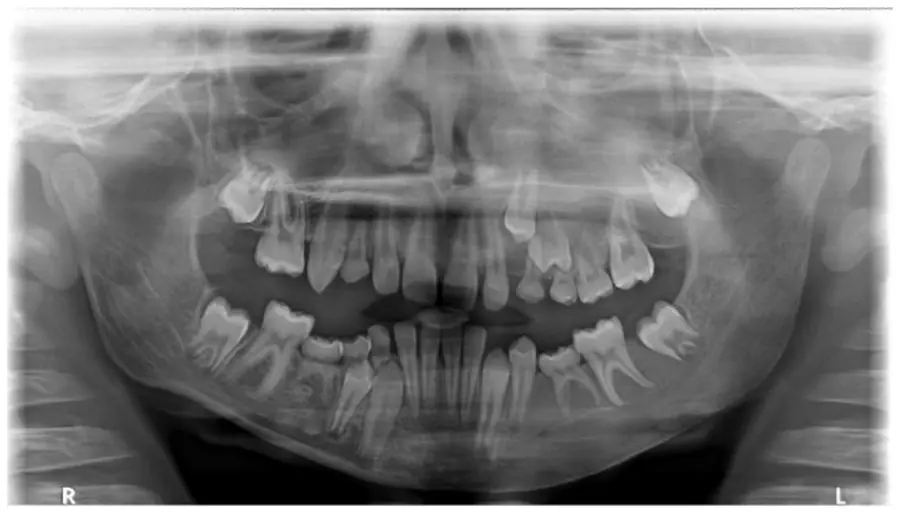
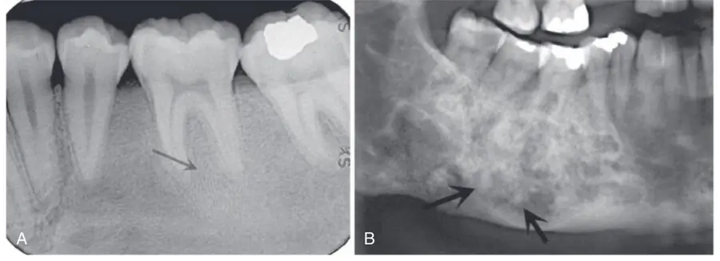

نسخه استخراجشده؛ ترجمه یا تأیید علمی انجام نشده است. وضعیت: captured
دیسپلازی فیبرو هم استخوان اسفنجی را با مخلوطی از بافت همبند فیبروز و استخوان نابالغ جایگزین میکند — ولی سازوکارش ژنتیکی و زمانمند است.

و این را دقیق بفهم: دیسپلازی فیبرو از یک جهش پس از لقاح (postzygotic) در ژن GNAS1 — تنظیمکنندهی تشکیل و ریمادلینگ استخوان — پدید میآید، و این جهش در ۹۳٪ موارد شناسایی شده است.
و پیامد زیبای این «پس از لقاح» بودن: «اگر جهش خیلی زود پس از تشکیل زیگوت رخ دهد، درگیری اسکلت بیشتر خواهد بود، شامل تظاهرات سیستمیک. جهشی که دیرتر پدید آید، تظاهرات کمتری خواهد داشت.» یعنی وسعت بیماری، تاریخ جهش را به تو میگوید.
و بافتشناسیاش امضای تصویری را میسازد: «ترابکولهای متعدد، کوتاه و بیشکل از استخوان بافهای. برخلاف استخوان طبیعی که ترابکولهایش در پاسخ به تنشها جهتگیری میکنند، ترابکولهای دیسپلازی فیبرو تصادفی جهتگیری شدهاند. و در مقایسه با استخوان طبیعی، ترابکول بیشتری در واحد حجم وجود دارد.»
و سه سطح از بیماری: شکل مونواوستوتیک (تکاستخوانی) حدود ۷۰٪ همهی موارد است و شایعترین نوع شناساییشده در فکهاست، پلیاوستوتیک وقتی چند استخوان درگیر باشند، و دو سندرم:
و سن: پلیاوستوتیک معمولاً در کودکان زیر ۱۰ سال شناسایی میشود؛ مونواوستوتیک در گروه سنی کمی بالاتر. و نکتهی مهم پیشآگهی: «ضایعات معمولاً وقتی رشد اسکلتی متوقف میشود ساکن میشوند، ولی تغییرات استخوانی ممکن است ادامه یابد — بهویژه در بارداری یا با مصرف قرصهای ضدبارداری خوراکی.»
محل: دیسپلازی فیبرو ماگزیلا را تقریباً دو برابر مندیبل درگیر میکند و بیشتر در نواحی خلفی. معمولاً یکطرفه است — ولی وقتی یک استخوان خط وسط مانند مندیبل یا فرونتال یا اسفنوئید را درگیر کند، تغییرات میتوانند از خط وسط بگذرند.

و حاشیهاش، اولین امضای این بیماری: «حاشیه معمولاً نامشخص است، با یک منطقهی گذار تدریجی و پهن میان استخوان طبیعی و دیسپلاستیک. برخی این پهن بودن گذار را «بلندینگ» (blending) استخوان دیسپلاستیک در الگوی ترابکولار طبیعی مینامند.»
و ساختار داخلی — و سه الگوی کلاسیک: ترابکولها ظریفتر، نامنظمتر و پرشمارتر از طبیعیاند. نتیجه:
و مهمترین تفاوت رفتاری دیسپلازی فیبرو با نئوپلاسمهای خوشخیم: «دیسپلازی فیبرو استخوان را در سراسر طولش بهطور یکنواختتری بزرگ میکند؛ به این بزرگ شدن دوکی (fusiform) میگویند. این الگو را باید با اتساع هممرکزتر نئوپلاسمهای خوشخیم مقایسه کرد.» و در همه حال، کورتکس نازکشده حفظ میشود.
و نشانهی اختصاصی ماگزیلا — سینوس مینیاتوری: دیسپلازی فیبرو مرزهای کورتیکال سینوس را جابهجا میکند و اندازهی حفرهی هوایی را کم میکند. دیوارهی لترال اغلب اول درگیر میشود و مرز خلفی-فوقانی آخر. و ویژگی مشخصه: «یک حفرهی هوایی مینیاتوری» که نسخهی کوچکشدهی سینوس سالم سمت مقابل است — و حتی رسس زیگوماتیک را هم حفظ میکند.
و اثر بر دندان و کانال: لامینا دورا بسیار کموضوح میشود چون استخوان دیسپلاستیک با آن ادغام میشود، و فضای PDL باریکتر به نظر میرسد. و اگر اپیسنتر زیر کانال آلوئولار تحتانی باشد، کانال را به سمت فوقانی میراند — برخلاف کیستها که آن را پایین میبرند.
و سه افتراق حیاتی، چون مدیریتشان بهکلی متفاوت است — استئومیلیت، فیبروم سمنتو-اوسیفایه، و استئوسارکوم:
و افتراق از PCOD: کانونهای PCOD اغلب چندکانونی با اپیسنتر در ناحیهی پریاپیکال هستند و در گروه سنی مسنتر رخ میدهند.